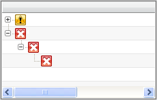
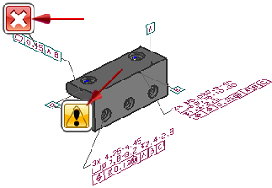

执行测试并查看结果
-
在设置测试对话框中，点击执行 Check-Mate 测试
 。
。 -
关闭设置测试对话框。
将根据您为这个部件设置的标准对部件中的所有 PMI 形位公差进行形位公差验证。
包含检查结果的 PMI 形位公差符号将列在 HD3D 工具导航器的结果组中。
相关的可视化标签将显示在图形窗口中。

-
在结果组的对象名称列中，展开检查 PMI 形位公差句法有效性。

-
要获取更多关于检查结果的信息，双击图形窗口中的可视化标签。

-
在 Check-Mate 结果窗口，点击更多详细信息并查看。
-
关闭部件。